Doc Thoughts
🤓xieby1
⏳2022.6.17
1 动机
1.1 二进制翻译

二进制翻译可以分为
用户级和系统级（左图）
在二进制翻译中
有两类客户指令
翻译难度高
- 间接跳转指令
- 访存指令
1.2 间接跳转指令
间接跳转的目标*GReg
无法在翻译时得到，在运行时才能得到
因此
需要进行上下文切换（上图蓝线）
需要在运行时进行地址查询
Refs:
- Federico, Alessandro Di and Giovanni Agosta. “A jump-target identification method for multi-architecture static binary translation.” 2016 International Conference on Compliers, Architectures, and Sythesis of Embedded Systems (CASES) (2016): 1-10.
1.3 访存指令
系统级
指令膨胀10x~100x[1]

用户级
内存空间挤占

Refs:
- 2014.espt, 2015.dual_tlb, 2015.hspt, 2021.btmmu
1.4 启发
硬件虚拟化（Hardware Virtualization）
操作系统状态：
- 用户状态
- 特权状态
- 🆕虚拟化状态
- CPU虚拟化
- 内存虚拟化
- 设备虚拟化

Refs:
- Kivity, Avi. “kvm : the Linux Virtual Machine Monitor.” (2007).
1.5 借鉴
- CPU虚拟化
- 指令直接执行的假象
直接执行
退出虚拟化模式
处理完成后
返回虚拟化模式
- 指令直接执行的假象
- 内存虚拟化
- 独占物理内存的假象
CPU虚拟化→间接跳转指令
可以直接执行指令
- 🈚缓存翻译出的宿主代码
- 🈚所有跳转目标查表
- 🈚翻译器的上下文切换
内存虚拟化→访存指令
拥有独立的物理/虚拟地址空间
- 🉑（系统级）指令膨胀小
- 🈚（用户级）空间挤占的问题
1.6 总结
二进制翻译中的难题
间接跳转指令
上下文切换开销
跳转目标查表开销
访存指令
指令膨胀
内存空间挤占
硬件虚拟化的启发
让客户（guest）
- 能够直接执行指令
- 拥有独立的物理/虚拟地址空间
2 设计构想
操作系统状态：
用户状态
特权状态
虚拟化状态
🆕翻译状态
(Translation Mode)
| 翻译 | 虚拟化 | 影响 |
|---|---|---|
| 系统级&用户级 | 系统级 | 执行流程存在区别 |
| 直接执行客户指令 | 直接执行指令 | 指令集存在区别 |
2.1 执行流程

2.2 指令集
直接执行客户指令的假象
复用&拓展
宿主指令集(Host ISA)
以支持客户指令集(Guest ISA)
2.3 复用&拓展
宿主指令集+客户指令集
法律问题
不优雅
设计一套微码

复用&拓展
尽可能挖掘公共部分
2.4 翻译🆚微码
二进制翻译（左） 微码+翻译状态（右）


- “1”型变为“Y”型
- 📈客户指令效率
- 📉宿主指令效率
2.5 弥补宿主
多核[1]
- 同指令集多核
- 同指令集异构多核[2]
- 多指令集异构多核[3]

Refs:
- Mitra, Tulika. “Heterogeneous Multi-core Architectures.” IPSJ Trans. Syst. LSI Des. Methodol. 8 (2015): 51-62.
- Peter Greenhalgh. big.LITTLE Processing with ARM Cortex-A15 & Cortex-A7. Technical report, ARM, 2011
- Venkat, Ashish. “Breaking the ISA Barrier in Modern Computing.” (2018).
2.6 总结
- 操作系统状态：🆕翻译状态(Translation Mode)
- 使用微码(uops)复用&拓展宿主指令集以支持客户指令集
- 原生多核弥补翻译增强核(Translation Enchanged Core)
3 微码设计
复用&拓展
3.1 类比
| 线性代数 | 微码设计 |
|---|---|
| 向量集甲和向量集乙 | 宿主指令集和客户指令集 |
| 向量空间 | 指令空间 |
| 基底 | 中间表示 |
| 求标准正交基底 | 进行重组or精简 |
3.2 中间表示
| 翻译/编译器 | 语义分析 | 说明 |
|---|---|---|
| LLVM[6], TCG | cakeml[1], ACL2, K[2], FuzzBall[3], sail[4][5] | 常见项目 |
| byte | bit | 精度高低 |
| 客户&宿主 | 客户 | 客户/宿主访存 |
| 模拟语义 | 验证语义 | 偏向软件/硬件 |
Refs:
- Kumar, Ramana et al. “CakeML: a verified implementation of ML.” Proceedings of the 41st ACM SIGPLAN-SIGACT (2014).
- Dasgupta, Sandeep et al. “A complete formal semantics of x86-64 user-level instruction set architecture.” Proceedings of the 40th ACM SIGPLAN (2019).
- https://github.com/bitblaze-fuzzball/fuzzball
- Gray, Kathryn E. et al. “An integrated concurrency and core-ISA architectural envelope definition, and test oracle, for IBM POWER multiprocessors.” 48th MICRO (2015): 635-646.
- Armstrong, Alasdair et al. “Detailed Models of Instruction Set Architectures : From Pseudocode to Formal Semantics.” (2018).
- Lattner, Chris and Vikram S. Adve. “LLVM: a compilation framework for lifelong program analysis & transformation.” International Symposium on Code Generation and Optimization, 2004. CGO 2004. (2004): 75-86.
3.3 数据流图
arm64借位减法
客户指令
sbc x1, x2, x3中间表示
not tmp,x3
add x1,x2,tmp
add x1,x1,CF⬌

➡

注：准确称呼是“连通导出子图”（Connected Induced Subgraph） https://en.wikipedia.org/wiki/Induced_subgraph
3.4 子图覆盖
| 线性代数 | 微码设计 | 图 |
|---|---|---|
| 向量集甲和向量集乙 | 宿主指令集和客户指令集 | 图集甲和图集乙 |
| 向量空间 | 指令空间 | 子图集 |
| 基底 | 中间表示 | 子图 |
| 求标准正交基底 | 进行重组or精简 | 子图覆盖 |
3.5 覆盖算法
for 每一条指令 in 指令集
{
一条指令➡一幅图集➡一个子图集
}➡
带权重（比如频率）的子图集
➡
根据权重选出最小覆盖图集
➡
微码集
3.6 总结
- 使用中间表示将指令转换为图
- 用图覆盖算法筛选出最小覆盖集
- 最小覆盖集即是微码集
4 实验和数据
4.1 a64指令
参与覆盖的指令
250种859条
adc adcs add adds adr adrp and ands asr autda autdb autdza autdzb autia autia1716 autiasp autiaz autib autib1716 autibsp autibz autiza autizb bfc bfi bfxil bic bics cas casa casab casah casal casalb casalh casb cash casl caslb caslh casp caspa caspal caspl cfinv clrex cls clz cmn cmp crc32b crc32cb crc32ch crc32cw crc32cx crc32h crc32w crc32x eon eor extr ldadd ldadda ldaddab ldaddah ldaddal ldaddalb ldaddalh ldaddb ldaddh ldaddl ldaddlb ldaddlh ldclr ldclra ldclrab ldclrah ldclral ldclralb ldclralh ldclrb ldclrh ldclrl ldclrlb ldclrlh ldeor ldeora ldeorab ldeorah ldeoral ldeoralb ldeoralh ldeorb ldeorh ldeorl ldeorlb ldeorlh ldlar ldlarb ldlarh ldnp ldp ldpsw ldr ldraa ldrab ldrb ldrh ldrsb ldrsw ldset ldseta ldsetab ldsetah ldsetal ldsetalb ldsetalh ldsetb ldseth ldsetl ldsetlb ldsetlh ldsmax ldsmaxa ldsmaxab ldsmaxah ldsmaxal ldsmaxalb ldsmaxalh ldsmaxb ldsmaxh ldsmaxl ldsmaxlb ldsmaxlh ldsmin ldsmina ldsminab ldsminah ldsminal ldsminalb ldsminalh ldsminb ldsminh ldsminl ldsminlb ldsminlh ldtr ldtrb ldtrh ldtrsb ldtrsh ldtrsw ldumax ldumaxa ldumaxab ldumaxah ldumaxal ldumaxalb ldumaxalh ldumaxb ldumaxh ldumaxl ldumaxlb ldumaxlh ldumin ldumina lduminab lduminah lduminal lduminalb lduminalh lduminb lduminh lduminl lduminlb lduminlh ldur ldurb ldurh ldursb ldursh ldursw ldxp ldxr ldxrb ldxrh lsl lsr madd mneg mov msub mul mvn neg negs ngc ngcs orn orr pacda pacdb pacdza pacdzb pacga rbit rev rev16 rev32 ror sbc sbcs sbfiz sbfx sdiv setf16 setf8 smaddl smnegl smsubl smulh smull stp str strb sttr sttrb sttrh stur sturb sturh sub subs sxtb sxth sxtw tst ubfiz ubfx udiv umaddl umnegl umsubl umulh umull uxtb uxth xpacd xpaci xpaclri
被过滤掉的指令
39种207条
at br brk ccmn ccmp cinc cinv csdb csel cset csetm csinc csinv csneg dc dcps1 dcps2 dcps3 dmb drps dsb eret esb hint hlt hvc ic isb mrs msr smc stxp stxr stxrb stxrh svc sys tlbi
4.2 x64指令
参与覆盖的指令
285种（操作数大小不同视为不同）861条
adcb adcl adcq adcw addb addl addq addw andb andl andq andw blcfillq blcicq blciq blcmskq blcsq blsfillq blsicq bsfl bsfq bsfw bsrl bsrq bsrw bswapl bswapq bswapw btcl btcq btcw btl btq btrl btrq btrw btsl btsq btsw btw cbtw clc cld cltd cltq cmc cmovael cmovaeq cmovaew cmoval cmovaq cmovaw cmovbel cmovbeq cmovbew cmovbl cmovbq cmovbw cmovel cmoveq cmovew cmovgel cmovgeq cmovgew cmovgl cmovgq cmovgw cmovlel cmovleq cmovlew cmovll cmovlq cmovlw cmovnel cmovneq cmovnew cmovnol cmovnoq cmovnow cmovnpl cmovnpq cmovnpw cmovnsl cmovnsq cmovnsw cmovol cmovoq cmovow cmovpl cmovpq cmovpw cmovsl cmovsq cmovsw cmpb cmpl cmpq cmpsb cmpsl cmpsq cmpsw cmpw cmpxchgb cmpxchgl cmpxchgq cmpxchgw cqto cwtd cwtl decb decl decq decw enter imulb imull imulq imulw incb incl incq incw lahf leal leaq leave leaw llwpcb lodsb lodsl lodsq lodsw lsll lzcntl lzcntq lzcntw movabsq movb movl movntil movntiq movq movsb movsbl movsbq movsbw movsl movslq movsq movsw movswl movswq movw movzbl movzbq movzbw movzwl movzwq mulb mull mulq mulw negb negl negq negw notb notl notq notw orb orl orq orw popq popw pushfq pushfw pushq pushw rclb rcll rclq rclw rcrb rcrl rcrq rcrw rdpkru rolb roll rolq rolw rorb rorl rorq rorw sahf sarb sarl sarq sarw sbbb sbbl sbbq sbbw scasb scasl scasq scasw seta setae setb setbe sete setg setge setl setle setne setno setnp setns seto setp sets sgdtq shlb shldl shldq shldw shll shlq shlw shrb shrdl shrdq shrdw shrl shrq shrw sidtq sldtl sldtq sldtw slwpcb smswl smswq smsww stc std stosb stosl stosq stosw strl strq strw subb subl subq subw t1mskcq testb testl testq testw tzcntl tzcntq tzcntw tzmskq xabort xaddb xaddl xaddq xaddw xchgb xchgl xchgq xchgw xlatb xorb xorl xorq xorw
被过滤掉的指令
189种（操作数大小不同视为不同）234条
adcxl adcxq adoxl adoxq andnl andnq bextrl bextrq blsil blsiq blsmskl blsmskq blsrl blsrq bzhil bzhiq clac cldemote clflush clgi cli clts clzero cmpxchg16b cmpxchg8b cpuid crc32b crc32l crc32q crc32w divb divl divq divw endbr32 endbr64 fxrstor fxrstor64 fxsave fxsave64 fxtract getsec hlt idivb idivl idivq idivw inb incsspd incsspq inl insb insl insw int int3 invd invlpga inw iretl iretq iretw larl larw lcalll lcallq lcallw ldmxcsr lfence lfsl lfsq lfsw lgs lgsl lgsw ljmpl ljmpq ljmpw lldtw lmsww lretl lslq lslw lssl lssq lssw ltrw mfence monitor monitorx mulxl mulxq mwait mwaitx nop nopl nopq nopw outb outl outsb outsl outsw outw pause pconfig pdepl pdepq pextl pextq popfq popfw prefetch prefetchnta prefetcht0 prefetcht1 prefetcht2 prefetchw prefetchwt1 ptwritel ptwriteq rdfsbasel rdfsbaseq rdgsbasel rdgsbaseq rdmsr rdpid rdpmc rdrandl rdrandq rdrandw rdseedl rdseedq rdseedw rdsspd rdsspq rdtsc rdtscp retq sarxl sarxq saveprevssp setssbsy sfence shlxl shlxq shrxl shrxq skinit stac stgi sti stmxcsr swapgs syscall sysenter sysexitl sysexitq sysretl sysretq tpause ud0 ud1 ud2 umonitor umwait verr verw vmcall vmfunc vmlaunch vmload vmmcall vmresume vmrun vmsave wbinvd wbnoinvd wrfsbasel wrfsbaseq wrgsbasel wrgsbaseq wrmsr wrpkru xend xgetbv xsetbv xtest
4.3 中间表示
（过滤前）指令翻译到TCG的膨胀率
a64
| 频次 | TCG | 频次 | TCG | |
|---|---|---|---|---|
| 37 | 0 | 13 | 10 | |
| 209 | 1 | 12 | 11 | |
| 168 | 2 | 14 | 12 | |
| 93 | 3 | 9 | 13 | |
| 150 | 4 | 11 | 14 | |
| 167 | 5 | 6 | 15 | |
| 86 | 6 | 11 | 16 | |
| 9 | 7 | 7 | 17 | |
| 23 | 8 | 2 | 18 | |
| 40 | 9 |
x64
| 频次 | TCG | 频次 | TCG | 频次 | TCG | ||
|---|---|---|---|---|---|---|---|
| 47 | 0 | 98 | 10 | 4 | 20 | ||
| 27 | 1 | 69 | 11 | 1 | 21 | ||
| 48 | 2 | 55 | 12 | 1 | 22 | ||
| 46 | 3 | 17 | 13 | ||||
| 349 | 4 | 10 | 14 | ||||
| 30 | 5 | 8 | 15 | ||||
| 84 | 6 | 8 | 16 | ||||
| 153 | 7 | 6 | 17 | ||||
| 81 | 8 | 13 | 18 | ||||
| 161 | 9 | 3 | 19 |
4.4 图覆盖
- 共27356个子图
- 最小覆盖集包含的子图数量
- 仅用于覆盖a64：130
- 用于覆盖a64和x64：97
- 仅用于覆盖x64：129
- 平均覆盖所需子图数（平均膨胀率）
- a64：2.86
- x64：3.66
4.5 人工复核
a64膨胀率[1]
| 频次 | 数量 |
|---|---|
| 9 | 0 |
| 153 | 1 |
| 55 | 2 |
| 13 | 3 |
x64膨胀率[2]
| 频次 | 数量 | 频次 | 数量 | |
|---|---|---|---|---|
| 37 | 1 | 8 | 5 | |
| 15 | 2 | 1 | 6 | |
| 20 | 3 | 1 | 8 | |
| 14 | 4 | 1 | 9 |
- 最小覆盖集的子图数量[3]
- 仅用于覆盖a64：55
- 用于覆盖a64和x64：29
- 仅用于覆盖x64：20
注：
- 复核a64时跳过了部分操作数重载类型的指令
- 复核x64时跳过了大多操作数重载类型的指令
- 去除了立即数、位宽、扩展、符号计算，这些暂时由人工比对
5 谢谢
🐱